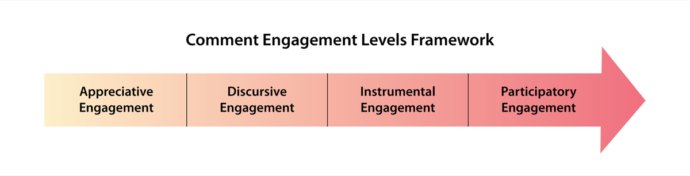
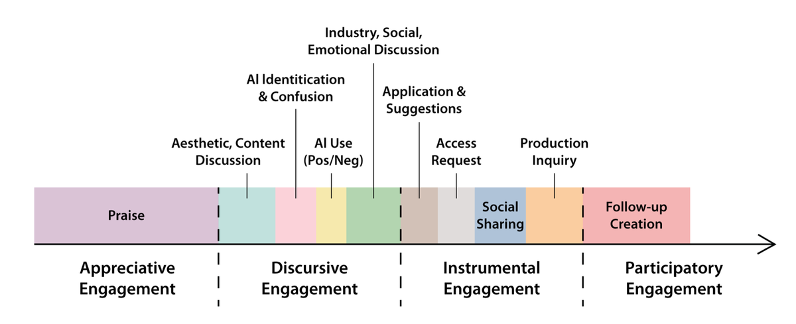
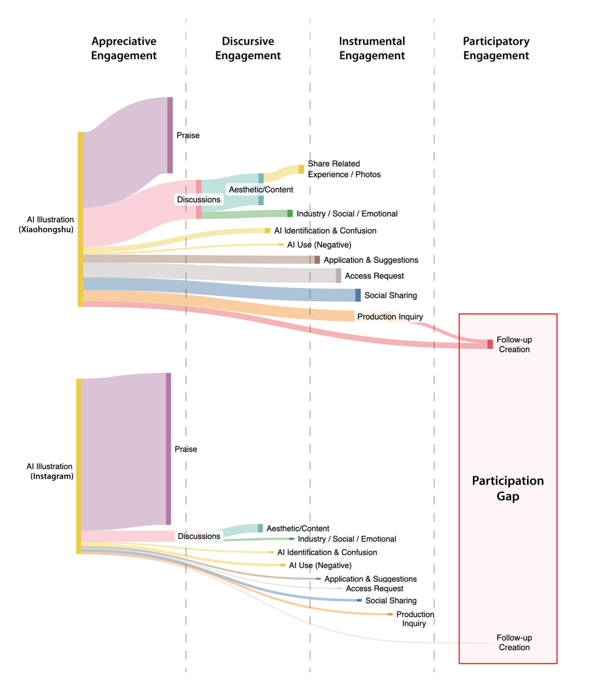

Audience Engagement with AI Illustration on Xiaohongshu and Instagram
Generative AI has made image-making available to almost anyone. What people do in the comments afterward varies with the platform and cultural context.
- Year
- 2026
- Type
- Independent research project
- Method
- Content analysis of comment sections
- Codebook
- Categories, definitions and examples
Key finding
Share of sorted comments that are praise. On Instagram, people mostly admire the work. On Xiaohongshu, they also discuss it, ask how it was made, and sometimes make their own. Follow-up creations are rare on both platforms (3.27% on Xiaohongshu, 0.06% on Instagram) and cluster in a few posts.
On this page
Research Question
How does audience engagement with AI-generated illustrations take shape across Xiaohongshu and Instagram?
Background
Most of the research on AI art I have read stays within a single culture, usually Western, and much of it debates its authenticity and legitimacy. Far less looks at how audiences actually react to it. Some studies do, such as Park, Oh and Kim (2024) on Instagram and Wang and Kim (2026) on Chinese platforms, but I have found few that compare that behavior across the Chinese and Western internets, which run on different platforms, norms, and languages. I read Xiaohongshu inside the wanghong ecology described by Craig, Lin and Cunningham (2021). That comparison is where this project begins.
Positionality
I can read both platforms from the inside, in Mandarin and in English, which gives me a cross-cultural perspective on social media. As a designer, I watched AI-generated content fill my own Xiaohongshu feed while my designer friends were liking AI art on Instagram, and the difference in how the two sides responded is what started this project.
Method
I studied AI illustration on two platforms, Xiaohongshu and Instagram. On each, I collected twenty of the most popular AI-illustration posts, for a total of forty, recorded from August 20 to 25, 2026. All posts state or tag that they are AI-made. On Xiaohongshu I filtered to the Illustration category, sorted by most comments, and chose a variety of styles. For each post, I logged its performance quantitatively (likes, saves, and comments on Xiaohongshu, and likes, comments, reposts, and shares on Instagram) and then read the comment section closely, sorting its comments into a set of categories I built for this study, counting their frequency, and identifying recurring patterns. A comment can count in more than one category, and I left out replies and irrelevant comments.
The thirteen comment categories
- Praise
- General positive responses expressing that they look good or appreciation for sharing, sometimes briefly mentioning aspects like color or composition.
- Tool
- Asking which AI tools were used or discussing AI image-generation and other AI tools.
- Process
- Asking how the works were created, requesting tutorials, or asking detailed questions about the creation process.
- Prompt
- Asking for the natural-language instructions used to generate similar images, or discussing the prompt.
- AI Identification and Confusion
- Asking whether the images were AI-generated, showing uncertainty or unawareness about their AI origin, or expressing surprise at what AI can achieve.
- Aesthetic and Content Discussion
- More detailed discussion of the style, techniques, or content, including preferences or votes for specific works.
- Industry, Social, and Emotional Discussion
- Discussions of the industry, broader social issues, or the deeper emotional and psychological effects of the work.
- Application and Suggestions
- Suggestions for improvement or further development, ideas for applying the illustrations in other contexts, or requests for collaboration.
- Access Request
- Asking for the original image, requesting permission for non-commercial use, or indicating an intention to use the image.
- Social Sharing
- Tagging friends to share the post and invite them to view or engage with it.
- AI Use (Positive)
- Expressing approval of or appreciation for the use of AI in the artwork.
- AI Use (Negative)
- Expressing criticism of or opposition to the use of AI in the artwork.
- Follow-up Creation
- Sharing hand-drawn versions or works inspired by the original artwork, or new images created using similar prompts.
Comment Engagement Levels Framework
The Comment Engagement Levels Framework describes progressively deeper levels of audience involvement in social media comment sections, particularly in response to creative content. It consists of four levels, from light engagement to active involvement and creative contribution.


- Appreciative Engagement: the basic level, where audiences express admiration, enjoyment, or other positive reactions to the content.
- Discursive Engagement: a deeper level in which audiences extend the content through observations, opinions, or discussion.
- Instrumental Engagement: a more action-oriented level in which audiences aim to achieve a practical purpose, such as seeking information or resources, offering suggestions, or directing others to the content.
- Participatory Engagement: the highest level, with audiences contributing creative content and becoming active participants in the community around the original post.
Mapping the comment categories onto the engagement levels


- Appreciative Engagement
- Praise.
- Discursive Engagement
- AI Identification and Confusion; Aesthetic and Content Discussion; Industry, Social, and Emotional Discussion; AI Use (Positive); AI Use (Negative).
- Instrumental Engagement
- Tool; Process; Prompt; Application and Suggestions; Access Request; Social Sharing.
- Participatory Engagement
- Follow-up Creation.
Findings
On these two platforms, AI illustration is treated differently, with some similarities. On Xiaohongshu, the audience behaves like a community that joins in and learns from one another: people ask which tool and prompt were used to make an image, and many go on to make their own. On Instagram, the audience behaves more like a gallery: people admire the work or reject it, but fewer try to reproduce it. I call this the participation gap. The same technology invites making on one platform and viewing on the other.
Supporting Findings
- Praise is the largest category on both platforms, especially on Instagram, where praise accounts for 86.54% of comments, about twice Xiaohongshu's 43.20%.
- Although the selected posts explicitly identify the images as AI-generated through titles, captions, account names, or platform AI labels, some viewers still appeared unaware or uncertain that they are AI-generated, at 3.01% of sorted comments on Xiaohongshu and 1.04% on Instagram.
- Opposition to AI looks different on each platform. On Xiaohongshu, people tend to describe the AI illustrations as unattractive or off-putting. On Instagram, the stance against AI is more explicit and direct, for example through terms like “AI slop” or anti-AI memes.
- Xiaohongshu audiences seem more willing to discuss deeper social questions raised by the work, with 4.13% of comments, compared with 1.38% on Instagram.
- Audiences on Xiaohongshu have more requests or discussions about tools, prompts, and creation processes, accounting for 6.20% of comments compared with 1.21% on Instagram.
- Xiaohongshu leans into the social side. More audiences request access to images (7.83 points more than on Instagram) and share posts with friends (5.81 points more), with some also sharing personal experiences and photos related to the post.
- Audiences on Xiaohongshu generate similar images or hand-drawn versions based on the original post, accounting for 3.27% of sorted comments. The Instagram figure is only 0.06%, indicating a participation gap between the two platforms.
- In my reading, Instagram seems more like a space for artists to showcase their portfolio, while audience comments show slightly more spontaneous purchase interest than on Xiaohongshu.
- In my reading so far, Xiaohongshu posts that name the AI tool in the title and give the prompt in the caption or comment draw more follow-up creations than posts that simply show the image.
- I also observed that on Instagram, there are more content-focused discussions and image selection in the comments when the captions ask viewers to choose a favorite.
Data Overview
Table 1 below holds these numbers.
The findings above rest on the counts in my spreadsheet: engagement for each post and the number of comments in each category, for all forty posts.
| Platform | Xiaohongshu | |
|---|---|---|
| Average Likes | 3,720 | 22,060 |
| Average Comments Count | 58 | 87 |
| Praise | 43.20% | 86.54% |
| Production Inquiry (Tool+Process+Prompt) | 6.20% | 1.21% |
| AI Identification and Confusion | 3.01% | 1.04% |
| Aesthetic, Content Discussion | 18.07% | 4.83% |
| Industry, Social, Emotional Discussion | 4.13% | 1.38% |
| Application and Suggestions | 4.56% | 1.09% |
| Access Request | 8.35% | 0.52% |
| Social Sharing | 7.31% | 1.50% |
| AI Use (Positive) | 0.69% | 0.23% |
| AI Use (Negative) | 1.20% | 1.61% |
| Follow-up Creation | 3.27% | 0.06% |
How to read these numbers. Percentages are shares of the comments sorted into categories, not of every comment on a post. Follow-up creation is rare and uneven: one post alone accounts for 16 of these comments (Table 3).
Example Pairs
The project shows its point through paired examples, one Xiaohongshu post beside one Instagram post, so a reader sees the difference directly.
| Platform | Xiaohongshu | |
|---|---|---|
| Cover Image | ||
| Praise | 42.04% | 95.24% |
| Production Inquiry | Tool: 8 Process: 1 Prompt: 1 | Prompt: 1 |
| Examples of Opposition to AI |
| |
| Other Discussion (Aesthetic, Content, Industry, Social, Emotional) |
|
|


In this pair, praise is more than twice as common on Instagram. Xiaohongshu commenters ask about tools and put their doubts into words, while the Instagram example of opposition is a meme.
| Platform | Xiaohongshu | |
|---|---|---|
| Cover Image | ||
| Praise | 28.57% | 83.02% |
| Production Inquiry | Process: 2 | None listed |
| Social Sharing | 7.14% | 9.43% |
| Follow-up Creation | AI-generated illustrations using similar prompts *16 | None listed |


This Xiaohongshu post drew 16 follow-up illustrations made with similar prompts, the most in these four pairs. My notes show its author had already shared the prompt.
| Platform | Xiaohongshu | |
|---|---|---|
| Cover Image | ||
| Praise | 34.85% | 94.87% |
| Production Inquiry | Prompt: 1 | None listed |
| Aesthetic/Content Discussion | Coastal landscape photo sharing *11 | 4.27% Appreciation for the lighthouse |
| Follow-up Creation | Drawing of lighthouse sharing *1 | None listed |


Both posts show a lighthouse. Xiaohongshu commenters answered with their own coastal photos and a drawing, while Instagram commenters mostly praised the image.
| Platform | Xiaohongshu | |
|---|---|---|
| Cover Image | ||
| Praise | 3.33% | 97.30% |
| Production Inquiry | Tool: 1 Process: 1 | Prompt: 1 |
| AI Identification & Confusion | 16.67% | None listed |
| Other Discussion (Aesthetic, Content, Industry, Social, Emotional) |
| None listed |


Both posts show an anime-style figure. On Xiaohongshu, comments turn to whether the image is AI-made and what AI means for artists. On Instagram, 97.30% of sorted comments are praise.
In Tables 2 to 5, percentages are shares of that post's sorted comments. Plain numbers and marks such as *16 are counts of comments. Images belong to their original creators and are shown for analysis. Commenters are not named.
Comparing the Two Platforms


In the Comment Engagement Levels Framework, Xiaohongshu reaches Participatory Engagement through follow-up creation, while Instagram mostly stops before this stage, revealing a participation gap between the two platforms.
Discussion
A deeper form of engagement would be for audiences to publish their follow-up AI illustrations as new posts, potentially creating a cycle of community creation. This is almost absent in the sample. Some possible explanations:
- Many users may simply want to learn the tool, try the prompt, or have fun.
- Platform algorithms encourage creators to keep a consistent content niche, making them less likely to post work that differs from what they usually share.
- Although the originality of AI art remains highly debated, reposting closely derived work may still conflict with social norms.
Limitations
This is a first look at forty posts, not a large or random sample, so the patterns here are early signals rather than settled findings. The study also does not fully consider how caption wording may influence comment content, which may affect the comparability of posts across the platforms. The two platforms differ not only in culture, but also in audience size, format, and the ways posts are surfaced, so some of the contrast may come from the platforms themselves. I do not know where the creators or commenters are from, and Instagram's audience is global, so these results describe two platforms and cannot speak for Chinese or Western culture as a whole. Choosing popular posts also leaves out the ordinary posts most people see. A larger study, with more posts and a second reader checking the categories, could test how far the participation gap holds.
Future Work
Next, I would widen the sample, test whether posts that name the tool really draw more copying, and add a third platform such as Douyin or TikTok, to learn whether the pattern is about China and the West or about each specific app. I could also track more nested comments, for a fuller picture of how audiences respond and participate within these communities.
References
Craig, D., Lin, J., & Cunningham, S. (2021). Wanghong as social media entertainment in China. Palgrave Macmillan. https://doi.org/10.1007/978-3-030-65376-7
This book describes the wanghong industry as a social media ecology grown from China's own political, cultural, and platform conditions, and different from Western systems. It gives my study its main frame: reading audience engagement inside this ecology, and watching how the ecology shifts as AI arrives. Since the book came out, Xiaohongshu has become one of China's leading platforms, and its Instagram-like format makes the two a natural pair to compare.Park, J., Oh, C., & Kim, H. Y. (2024). AI vs. human-generated content and accounts on Instagram: User preferences, evaluations, and ethical considerations. Technology in Society, 79, Article 102705. https://doi.org/10.1016/j.techsoc.2024.102705
In a controlled user study, people evaluated AI accounts and their posts about as favorably as those of human influencers, and often could not tell them apart. That points to a shift in how social media may work. My study builds on it by moving from a lab setting to live comment sections, and by adding Xiaohongshu so the picture is not only Western.Wang, C., & Kim, S.-H. (2026). What is the future of AI-generated art? An AI-assisted netnography of resistance on Chinese social media platforms. Futures, 180, Article 103815. https://doi.org/10.1016/j.futures.2026.103815
Wang and Kim trace why some users resist AI-generated art, naming concerns such as emotional absence and copyright, while also finding that acceptance grows as the technology matures. My study extends this from resistance to the fuller range of how audiences engage with AI art, including the ways they take part in it.